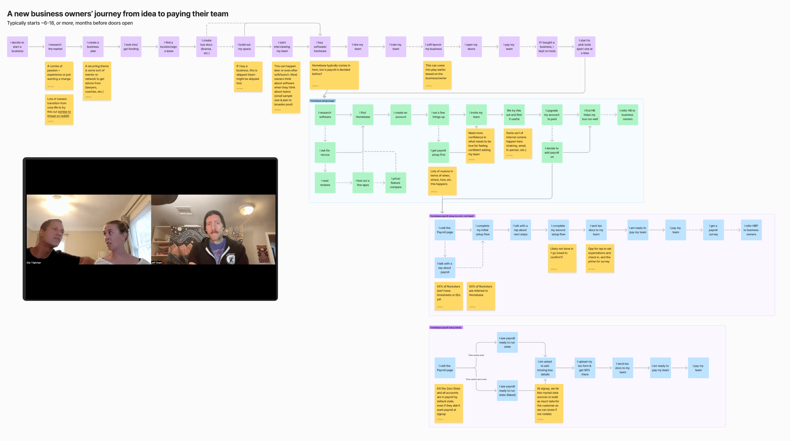

Making Homebase a first class citizen for payroll.
- Increased payroll runs ~700% with AI
- Increased payroll qualified leads ~500% with AI
- Led strategy, research, and design
Homebase is an all-in-one toolkit for small business owners to power their teams: from scheduling, time tracking, payroll, messaging, hiring, and and more.
The Opportunity
Payroll adoption is the biggest path for growth, but business owners rarely think about Homebase for payroll, and the set up process is arduous. It’s the stickiest feature, it allows revenue for freemium customers as an add-on, and adds major value to both businesses and their employees (time saved + cash advances).
The Challenge
Can we drive more business owners to us before choosing a payroll provider and shorten time to payroll run for those ready to use our payroll? Can we make this feel magical? Can we change their behavior to start with payroll setup?
Current data:
-
> 1% of signups show interest in payroll
Customers go with what they know: an accountant or Quickbooks, etc. -
60+ questions, 10+ steps
This is in addition to the signup and normal onboarding flows... - ~38% finish, ~8% run payroll
Lots of $ left of the table

Research & Discovery:
- Pair with Customer Support and Sales: Weekly syncs with team leads, listening to Gong calls, sifting through Help tickets.
- 35 customer calls: I led calls with successful and unsuccessful payroll customers to understand their journey from idea to a paid team
- 300+ survey responses: To gain more confidence, I scaled learnings with a few surveys
- Payroll is a business milestone, not just another feature. It became clear from my research that customers went with what they knew: an accountant or software they had heard of (Quickbooks, etc.).
Ideation & Prototyping
- Ideation: Working with Sales and through my customer calls, I got initial validation on the idea we wanted to build towards.
- Wireframing & Prototyping: I tested a few flows using moderated and unmoderated sessions in Maze to understand what resonated most, and felt like it added the most value (and magic).
Happy path elevated with AI ✨
- Removing 80% of set up: We knew the biggest dropoffs in their set up process, and designed an AI-assisted workflow to make this feel magical.
- Finding the right time: We felt confident we could do this in the current payroll set up flow, but wanted to get as upfunnel as possible.
- Changing behaviors: Another goal was learning if we could change the behavior of these customers to commit and start payroll first.
Results & Impact
- Payroll runs increased ~700%: For customers in the test, who went through the full flow, they ran payroll at an astonishlingly higher rate.
- PQLs increased ~500%: We shortened the time to becoming a payroll-qualified lead (i.e. showing payroll intent in the product) from ~35 minutes to ~4 minutes. This also sped up the connections our payroll sales team was able to make with this high-intent customers.
Lessons Learned/Challenges
For customers in the experiment, changing the narrative for them to be all around payroll, i.e. getting ready to pay your team for the first time, was effective at helping change their behavior to starting with payroll first. Not having access to the document at this time was a known risk, and we have work ready to go to allow this later in the experience, but asking for this right away did not have any negative impact even if I did not start with payroll setup right away. Removing the hard parts of payroll setup with this experience clearly helps interested customers stay on track and motivated to finish asap.